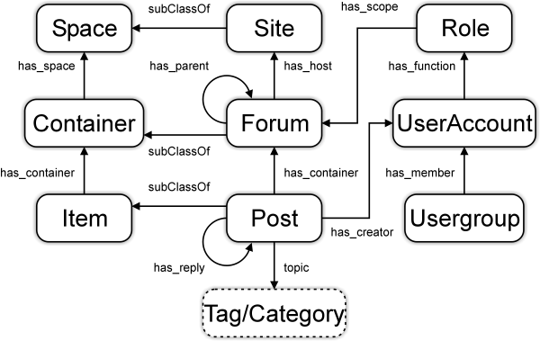

Major change to a SIOC term: User is now called UserAccount
As per recent discussions on the SIOC developers mailing list and requests from many parties requesting clarification of the term sioc:User (which has oft been confused with foaf:Person), we are happy to announce that the new term sioc:UserAccount has been added to the ontology in replacement of the now-deprecated sioc:User term (in revision 1.35 of the SIOC ontology).
The SIOC specification has been updated accordingly, and knock-on effects to SIOC modules have been corrected.
We would ask all application maintainers to update your code to reflect this change, i.e., replace User with the new term UserAccount.
We are attaching updates to the various figures showing the connections internally between SIOC terms, and also between SIOC, FOAF and SKOS.
Please discuss this change here.

The main classes and properties in SIOC, reflecting the UserAccount change.
The relationships between SIOC, FOAF and SKOS, reflecting the UserAccount change.
An example of content created by a person across multiple sites, linked to a foaf:Person via multiple sioc:UserAccounts.
![Reblog this post [with Zemanta]](http://img.zemanta.com/reblog_e.png?x-id=8bf389a4-5598-44b1-9779-9f0c4546a0bd)
- Cloud's blog
- Login to post comments
This resource is supported by Science Foundation Ireland under grant number SFI/02/CE1/I131 (Líon) and SFI/08/CE/I1380 (Líon 2) at the Digital Enterprise Research Institute, National University of Ireland, Galway.